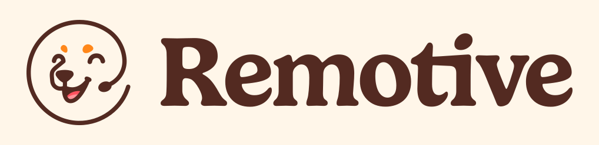

Warum Remote Work für so viele Menschen attraktiv ist
Arbeit muss heute nicht mehr automatisch bedeuten, jeden Morgen ins Büro zu fahren. Viele Tätigkeiten lassen sich digital erledigen – und genau das eröffnet neue Möglichkeiten für Menschen, die flexibler arbeiten, ihren Wohnort freier wählen oder Beruf und Privatleben besser miteinander verbinden möchten.
Was ist ein Remote Job?
Ein Remote Job ist eine Tätigkeit, bei der du nicht dauerhaft an einen festen Unternehmensstandort gebunden bist. Das kann vollständige Remote-Arbeit sein, ein Homeoffice-Modell oder eine Stelle, bei der du nur gelegentlich vor Ort sein musst.
Wichtig: „Remote“ bedeutet nicht automatisch „von überall auf der Welt“. Manche Arbeitgeber erlauben Remote Work nur innerhalb Deutschlands, innerhalb der EU oder in bestimmten Zeitzonen. Deshalb lohnt sich ein genauer Blick auf die jeweilige Stellenanzeige.
Welche Vorteile hat ein Remote Job?
- Du sparst tägliche Fahrzeiten und Pendelkosten.
- Du kannst deinen Wohnort flexibler wählen.
- Du bekommst Zugang zu Arbeitgebern außerhalb deiner direkten Umgebung.
- Digitale Zusammenarbeit wird Teil deines normalen Arbeitsalltags.
- Je nach Unternehmen kann Remote Work Reisen oder einen längeren Aufenthalt an einem anderen Ort erleichtern.
Welche Remote Jobs gibt es?
Remote Work ist längst nicht mehr nur etwas für Programmierer. Viele Unternehmen suchen Mitarbeiter für digitale Tätigkeiten, die sich problemlos außerhalb eines klassischen Büros erledigen lassen.
Kann ich auch ohne IT-Studium remote arbeiten?
Ja. Entscheidend ist nicht automatisch ein technisches Studium, sondern ob deine Tätigkeit digital erledigt werden kann und welche Anforderungen der Arbeitgeber stellt. Gerade Support, Assistenz, Content, Marketing, Recruiting, Operations und verschiedene administrative Rollen können für Bewerber interessant sein, die keine klassische Entwicklerkarriere anstreben.
Wo finde ich seriöse Remote Jobs?
Du kannst natürlich LinkedIn, Indeed und klassische Jobbörsen nutzen. Zusätzlich würde ich spezialisierte Remote-Plattformen in die Suche aufnehmen. Gerade Remote Rocketship und Remotive eignen sich gut als zusätzliche Hauptquellen; FlexJobs kann die Suche mit geprüften Remote- und flexiblen Stellen ergänzen.
Für eine aktive Remote-Jobsuche würde ich nicht nur auf einer einzigen Plattform suchen. Diese beiden Seiten sind besonders interessant, weil sie sich stark auf Remote-Arbeit konzentrieren und dir zusätzliche Stellen zeigen können.
Remote Rocketship
Remote Rocketship konzentriert sich auf Remote-Stellen und bündelt Jobs aus vielen Unternehmensquellen. Besonders praktisch sind die Filter nach Jobtitel, Land, Erfahrung und weiteren Kriterien.
- eigene Suche für Deutschland
- viele Filter für gezielte Jobsuche
- Job-Alerts für neue Stellen
- für viele verschiedene Berufsfelder interessant
Meine Empfehlung: Wenn du aktiv einen Remote Job suchst, würde ich Remote Rocketship definitiv zusätzlich zu klassischen Jobbörsen nutzen.
Remote Jobs entdecken →Remotive

Remotive ist eine weitere spezialisierte Plattform für vollständig remote ausgeschriebene Jobs. Die Suche lässt sich nach Kategorie, Standort, Erfahrungslevel, Beschäftigungsart und weiteren Kriterien filtern.
- große Auswahl an Remote-Stellen
- Filter nach Standort und Karrierelevel
- Jobs aus Marketing, Support, Tech, Operations und mehr
- gut als zweite Quelle neben Rocketship
Meine Empfehlung: Nutze Remotive parallel zu Rocketship. Je mehr passende Quellen du gleichzeitig prüfst, desto größer ist deine Chance, eine interessante Stelle früh zu entdecken.
Remotive ansehen →FlexJobs
FlexJobs konzentriert sich auf geprüfte Remote-, Homeoffice- und flexible Stellenangebote. Besonders interessant ist die Plattform, wenn du Wert darauf legst, weniger Zeit mit zweifelhaften oder unpassenden Anzeigen zu verlieren.
Werbung · Einige Links in diesem Bereich können Partnerlinks sein.
Ist Remote Rocketship kostenlos?
Teilweise. Du kannst die Plattform zunächst ansehen und einen begrenzten Teil der Suche nutzen. Für den vollständigen Zugriff gibt es eine bezahlte Mitgliedschaft.
Wenn du gerade ernsthaft nach einem Remote Job suchst, würde ich persönlich eher den vollständigen Zugang nutzen, weil eine größere Auswahl und mehr Suchmöglichkeiten genau in dieser Phase den größten Nutzen haben. Bezahlte Abos verlängern sich laut Anbieter automatisch, bis du kündigst; die Kündigung kann über den Account bzw. Support erfolgen. Remote Rocketship nennt außerdem aktuell eine 14-Tage-Geld-zurück-Garantie für individuelle Paid-Mitgliedschaften.
Kann ich mit einem Remote Job wirklich von überall arbeiten?
Manchmal ja – aber eben nicht bei jeder Stelle. Achte besonders auf Formulierungen wie „Germany Remote“, „EU Remote“, „Worldwide“ oder feste Zeitzonen. Steuern, Arbeitsrecht, Aufenthaltsrecht und die Unternehmensrichtlinien können ebenfalls Einfluss darauf haben, von wo aus du tatsächlich arbeiten darfst.
Wie finde ich schneller einen passenden Remote Job?
1. Suche nach mehreren Jobtiteln
Ein und dieselbe Tätigkeit kann ganz unterschiedlich bezeichnet werden. Suche nicht nur nach einem Begriff, sondern nach mehreren verwandten Jobtiteln.
2. Nutze spezialisierte Remote-Plattformen
Ergänze große Jobbörsen um Seiten, die sich gezielt auf Remote-Arbeit konzentrieren. Remote Rocketship und Remotive würde ich dabei als zwei Hauptquellen nutzen; FlexJobs kann deine Suche zusätzlich ergänzen.
3. Reagiere auf neue Stellen schnell
Beliebte Remote-Stellen können viele Bewerbungen erhalten. Wenn eine Rolle wirklich gut passt, solltest du nicht unnötig tagelang warten.
4. Filtere konsequent
Arbeitszeit, Land, Sprache, Erfahrungslevel, Vertragsart und Gehalt sollten zu deinem tatsächlichen Leben passen. Mehr Anzeigen sind nicht automatisch besser – passende Anzeigen sind besser.
Wie bewerbe ich mich erfolgreich auf einen Remote Job?
Ein Remote-Arbeitgeber möchte nicht nur sehen, was du beruflich kannst. Wichtig sind häufig auch Selbstorganisation, klare Kommunikation, digitale Zusammenarbeit und die Fähigkeit, eigenständig zu arbeiten.
- Passe deinen Lebenslauf an die konkrete Ausschreibung an.
- Zeige relevante digitale Tools und Remote-Kompetenzen.
- Nutze konkrete Beispiele statt allgemeiner Floskeln.
- Heb Erfahrungen hervor, die genau zur ausgeschriebenen Rolle passen.
- Prüfe vor dem Absenden, ob alle geforderten Unterlagen enthalten sind.
Stelle gefunden? Dann kommt der Smart Job Compass ins Spiel.
Ich arbeite gerade an einem eigenen Tool für Remote-Bewerbungen. Der Smart Job Compass soll eine konkrete Stellenanzeige mit deinem Profil abgleichen und daraus anschließend ein individuell auf die Stelle zugeschnittenes Bewerbungsportfolio erstellen.
Ziel: Nicht hundert beliebige Bewerbungen verschicken – sondern schneller erkennen, welche Stelle wirklich passt und die Bewerbung gezielter aufbauen.
Wie erkenne ich unseriöse Remote-Job-Angebote?
- Prüfe den Arbeitgeber und die offizielle Unternehmenswebsite.
- Sei vorsichtig, wenn Geld verlangt wird, nur damit du dich bewerben oder anfangen kannst.
- Überweise niemals spontan Geld für angebliche Arbeitsmittel an unbekannte Personen.
- Prüfe E-Mail-Domain, Vertrag und Ansprechpartner.
- Bei ungewöhnlich hohen Versprechen ohne klare Aufgabenbeschreibung: genauer hinschauen.
Häufige Fragen zu Remote Jobs
Was ist der Unterschied zwischen Homeoffice und Remote Work?
Homeoffice beschreibt häufig das Arbeiten von zu Hause. Remote Work ist weiter gefasst und kann – abhängig vom Arbeitgeber – auch andere Arbeitsorte einschließen.
Welche Remote Jobs eignen sich für Quereinsteiger?
Das hängt von Erfahrung und Stelle ab. Häufig interessant sind Support, Assistenz, Content, Social Media, administrative Tätigkeiten und bestimmte Operations-Rollen.
Wo finde ich Remote Jobs in Deutschland?
Neben klassischen Plattformen kannst du spezialisierte Remote-Jobbörsen wie Remote Rocketship nutzen. Dort lässt sich gezielt nach in Deutschland verfügbaren Remote-Stellen suchen.
Kann ich einen Remote Job in Teilzeit finden?
Ja. Es gibt sowohl Vollzeit- als auch Teilzeit-, Vertrags- und projektbasierte Remote-Rollen. Welche Modelle verfügbar sind, hängt vom jeweiligen Arbeitgeber ab.
Kann ich als Deutscher für ein Unternehmen im Ausland remote arbeiten?
Grundsätzlich gibt es internationale Remote-Stellen, allerdings müssen Arbeitgeber, Vertragsmodell, Steuer- und Aufenthaltsfragen sowie die erlaubten Arbeitsorte zusammenpassen.
Welche Plattform sollte ich zuerst ausprobieren?
Für eine breite Remote-Jobsuche würde ich Remote Rocketship und Remotive zusätzlich zu klassischen Jobbörsen verwenden. FlexJobs ist eine weitere interessante Ergänzung, wenn du gezielt nach geprüften Remote- und flexiblen Stellen suchst.
Werbung · Einige Links können Partnerlinks sein.